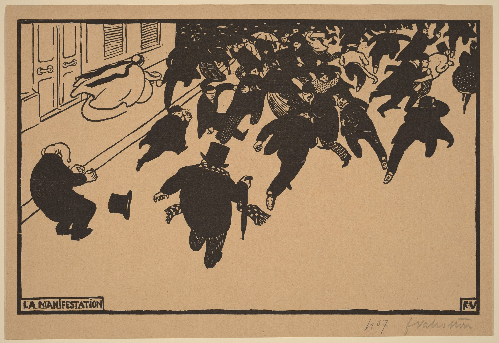

The pressure of empty space
The crowd rushes forward. Fear occupies the unoccupied.

Félix Vallotton · 1893 · Woodcut · Accession 1952.8.476
Object file / Facts
La Manifestation (The Demonstration), 1893, by Félix Vallotton (1865–1925). The image reproduced here is the National Gallery of Art impression, accession 1952.8.476, recorded as a woodcut. Its museum image is marked Public Domain. This is a print with multiple impressions; measurements and accession numbers from other collections are not transferred to this sheet. This impression and image rights
Composition / A mass becomes a body
Look first at thumbnail scale. Across the upper edge, the crowd approaches a continuous black band; nearer the bottom, bodies separate. The building and diagonal curb tilt the street into depth, while individual feet keep breaking its order. The foreground figure with a top hat and umbrella becomes a distinct landing point. Space around him turns running from a crowd pattern into a bodily act. The lower right offers almost no street detail: with nothing to hold onto there, the eye returns to the unstable figures.
Color / A palette without bright hues
The governing relation of this black-and-white woodcut is ink against unprinted paper, rather than complementary hues. In this reproduction, warm brown paper meets near brown-black ink. Low chroma in the ground and low value in the ink produce strong value contrast. The same paper tone supplies faces, collars and scarves, connecting the small internal lights with the street. Adjacent darks make these pale shapes more conspicuous, an effect readable through simultaneous value contrast. The warm reproduction does not establish a separate brown ink layer or the original hue of the paper.
Light / Black is not simply shadow
A dark coat and a pale face become flat signs. There is little continuous tonal modeling and no clearly established system of cast shadows, so the black masses cannot be assigned to one light source. Volume depends more on elbows, knees, coat edges and overlap. Pale paper threads through the crowd before opening into the street. To me, that shift feels like a quick breath followed by a pause that lasts too long. This last comparison describes a viewing experience, not a lighting fact.
Technique / Removal carries the story
Woodcut is a relief process: retained surfaces take ink, while cut-away areas generally remain unprinted. Here, broad black shapes set the pace, and spare pale marks distinguish eyes, hat brims, checked scarves and folds. Detail is concentrated where recognition needs it, rather than spread evenly over every coat. At overlaps, dark bodies merge; exposed faces and hands become intermittent signals. These are observations of the printed image. A digital reproduction cannot establish tools, cutting sequence or printing pressure.
Artist context / Facts
Swiss-born Vallotton developed his painting and printmaking in Paris. His woodcuts established his reputation in the 1890s, alongside an incisive attention to social relationships. Museum commentary identifies this scene as a dispersing demonstration whose source of pressure lies outside the frame; it does not identify a particular event. That context helps us read flight without inventing a news report around the image. Artist context
Why it moves me / Interpretation
What holds me is the loss of everyday composure. A hat drops, somebody falls, an umbrella and scarf still carry the habits of ordinary life. Small routines and major bodily disorder collide in one instant. The force beyond the frame has no face, yet it has already changed every posture. I read a shared vulnerability here: from afar, people may become a dark mass; close up, each remains a body with weight, capable of falling.
Borrow the method / Practical suggestions
For a poster or monochrome photograph, gather dark silhouettes on one side and reserve an uninterrupted field on the other. Aim two or three tilted contours into that field and see whether the emptiness acquires direction. Check separation in grayscale before adding recognition details. An editorial palette to try: paper #F4F0E7, ink #25221E, warm gray #ACA18F. These are contemporary layout suggestions, not exact artwork samples or an artist recipe. Keep artificial aging textures quiet so the actual image remains legible.
Sources and image

Artwork rights belong to the original creator; the museum marks this image Public Domain. The commentator does not claim ownership of the artwork. Object facts follow the collection records; composition, palette, light, visible technique and emotional readings are independent visual analysis. Reproduction colors do not establish the colors of the original in person.
Museum commentary on other impressions: Composition and context · Space and pattern